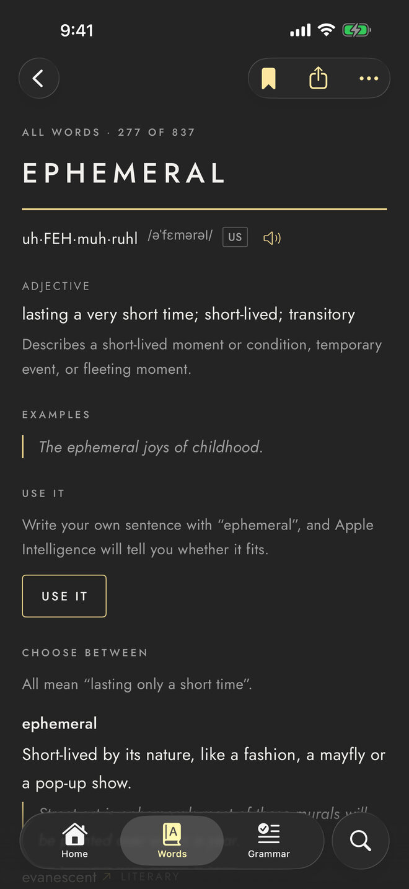
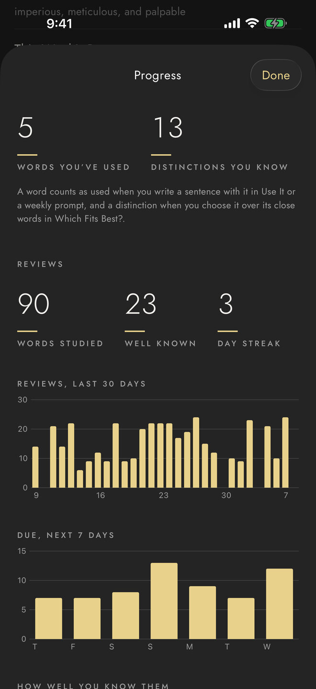
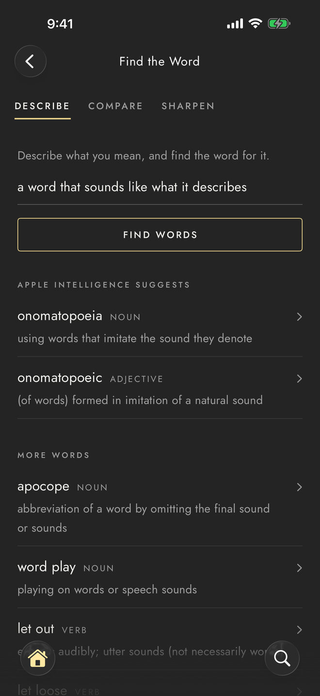
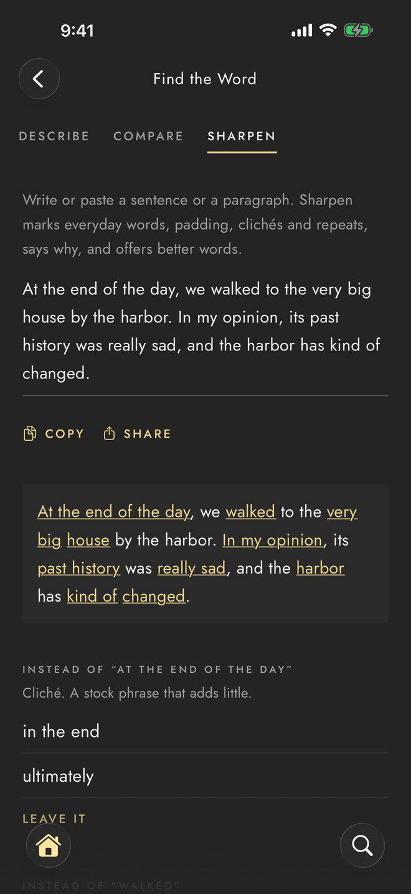
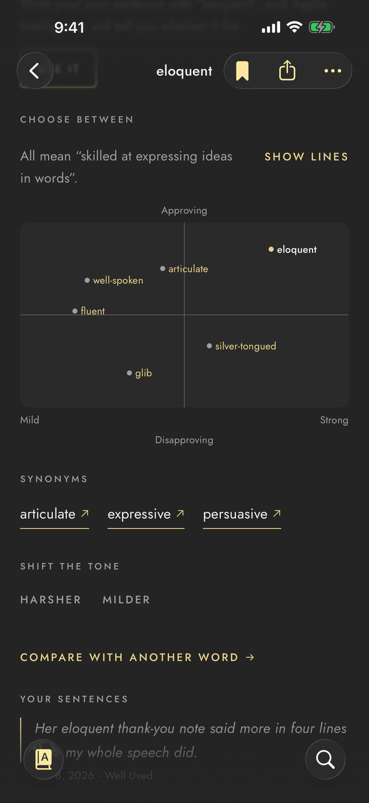
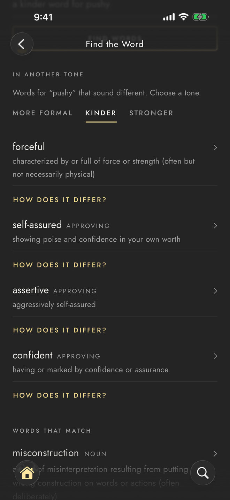
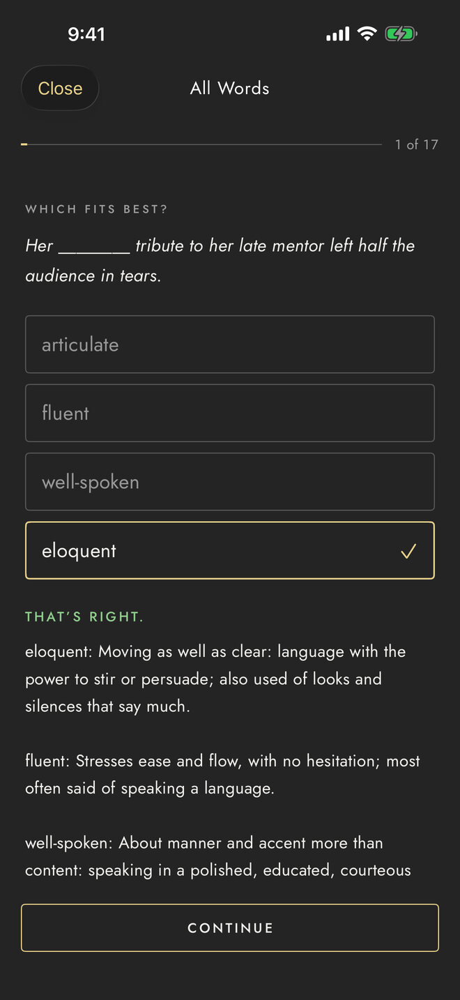
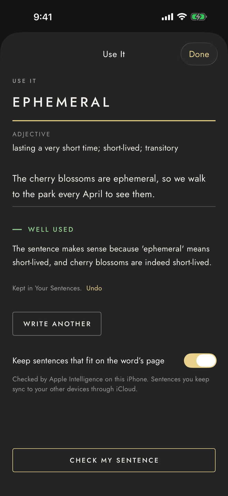
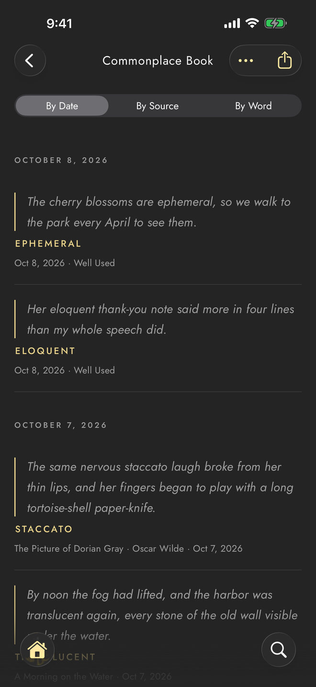
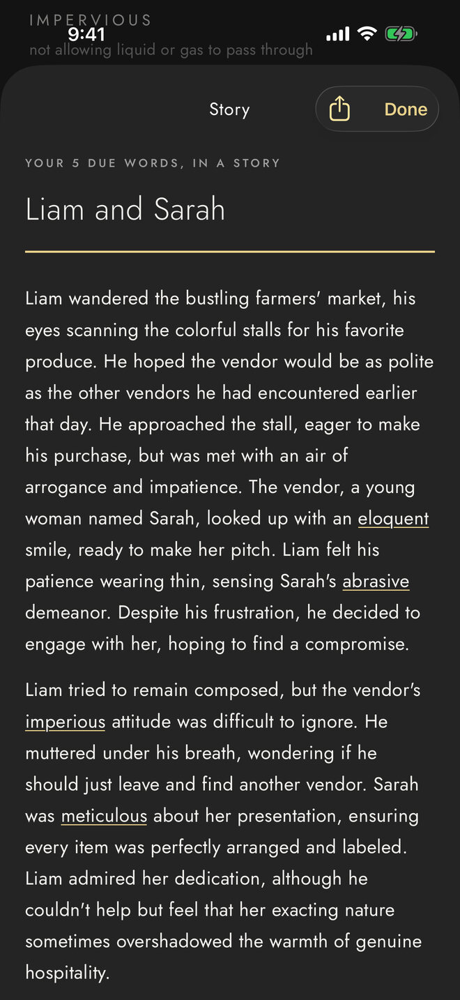

iOS · iPadOS
The exactly right word.
Mot Juste turns the words you meet into words you use, on iPhone and iPad.
Look up any of more than 125,000 words, even offline. Find the word you can't think of, see how it differs from its close neighbors, sharpen what you write, and keep every word you meet until it's yours. No account, no ads, no tracking.

02 // About Mot Juste
The exactly right word, kept until it's yours.
Mot juste is French, used in English, for the exactly right word. Mot Juste helps you find it, then keeps it until it's yours.
A dictionary of more than 125,000 words from Open English WordNet and English Wiktionary, with 837 entries written for the app, each with notes, examples, and its origin, and 288 groups of close words told apart.
What it does:
- Looks up any of more than 125,000 words, even offline
- Names the word you can't think of from what you mean, or finds a kinder, harsher, more formal, or more casual one
- Shows the close words you might weigh a word against, how each differs, and a sentence where each fits best
- Sharpens a paragraph: marks everyday words, padding, clichés, and repeats, says why, and offers better words, in the app, the share sheet, or with Siri
- Saves words from Safari, Books, Kindle, or a printed page, and keeps the sentence you found each one in, in your Commonplace Book
- Brings three new words a day, chosen for what you write, in a morning notification and in widgets on the Home Screen, the Lock Screen, and StandBy
- Brings each word back in a short review just before you'd forget it, until you can choose it over its close words
- Keeps the sentences you write with your words, sets a short writing prompt each week, and shows the words you lean on
- Quizzes meanings, gaps, opposites, and spelling, with forty lessons on punctuation, grammar, and style
- With Apple Intelligence, checks a sentence you write, and writes a short story from the words you're learning
- Keeps your words, lists, reviews, and Commonplace Book the same on iPhone and iPad through iCloud
Your progress:

The words you've used, the close words you can tell apart, and every review of the last 30 days.
Works offline · no account
03 // Screenshots
A look inside
Select any screenshot to see it full size.
iPhone 6.9″ display · 8 screens
-
01Find the word

Full size ↗ Describe what you mean Onomatopoeia, from a description -
02Sharpen

Full size ↗ Sharpen a paragraph Clichés, padding, everyday words -
03Choose between

Full size ↗ Close words, told apart Eloquent, articulate, fluent, glib -
04Shift the tone

Full size ↗ A kinder word Assertive or confident, for “pushy” -
05Review

Full size ↗ Which fits best? Eloquent, over its close words -
06Apple Intelligence

Full size ↗ Use it Ephemeral · well used -
07Commonplace Book

Full size ↗ Every sentence, kept Met while reading, or your own -
08Stories

Full size ↗ Stories from your words Liam and Sarah


04 // Platforms & language
Supported platforms
-
iPhoneiOS 17 or later
-
iPadiPadOS 17 or later, with Words in split view
-
Apple IntelligenceFor checking sentences in Use It, Stories, and Find the Word's suggestions: a device that supports it, on iOS 26 or later
-
iCloudOptional: keeps your words, lists, reviews, and Commonplace Book the same on iPhone and iPad
-
In other appsThe share sheet, Siri and Shortcuts, and an optional keyboard that offers more exact words as you type, without Full Access
-
No account, no ads, no trackingThe dictionary, Find the Word, lessons, and reviews are all on your device, and work offline
Language
-
EnglishU.S. English: the app, its dictionary, and its lessons
- PronunciationGeneral American, as a respelling and in IPA: uh·FEH·muh·ruhl /əˈfɛmərəl/
- DefinitionsOpen English WordNet and English Wiktionary, and 837 entries written for Mot Juste
- In LiteratureQuotations from books in the public domain, with their authors and years
- GrammarForty lessons on punctuation, grammar, commonly confused words, and style
Mot Juste is in English whatever language your device uses.